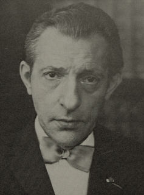

|  |
Jules François studied medicine at the University of Louvain, graduating in 1930. He commenced a private ophthalmologic practice in Charleroi, while also conducting scientific work. This eventually led to his appointment as professor of ophthalmology at the University of Ghent, where he established a modern ophthalmological department. Jules François published more than 1000 articles. He was an officer of the Order of Leopold II and a chevalier of the Légion d'Honneur.
Obituaries:
References:Journal of Neurological Sciences, Amsterdam, 1984, 68: 101. Survey of Ophthalmology, 1984, 29: 168.
A new syndrome: dyscephalia with bird face and dental anomalies, nanism, hypotrichosis, cutaneous atrophy, microphthalmia and congenital cataract.
Archives d'ophtalmologie, Paris, 1858, 60: 842. Hallermann-Streiff- François syndrome.